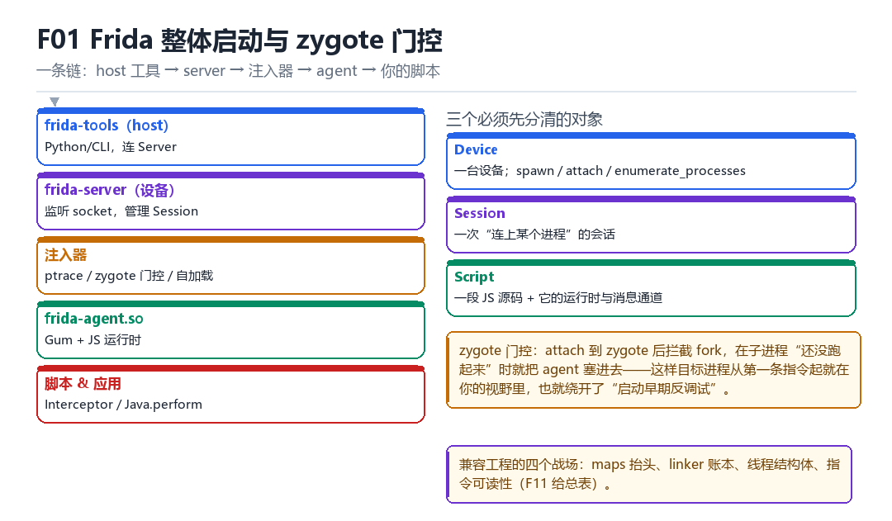
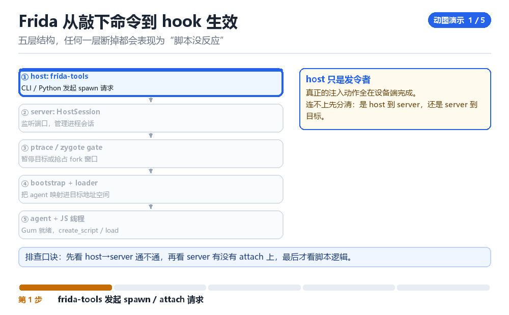

Frida 整体启动、进程注入与 Zygote 门控
frida-tools、server/HostSession、ptrace/bootstrap/loader、zygote/USAP、子进程 agent、mapper 与自卸载
先建立整条链的心理模型：谁发起、谁中转、谁落地、谁执行。
1.1 五层结构

| 层 | 代表 | 职责 |
|---|---|---|
| host 工具 | frida-tools | CLI / Python，发起所有请求 |
| 设备端 server | frida-server | 监听端口、管理 Session、执行注入 |
| 注入器 | ptrace / zygote 门控 | 把 agent 映射进目标 |
| agent | frida-agent.so | Gum + JS 运行时 |
| 脚本 | 你的 JS | Interceptor / Java.perform |
1.2 三个对象模型
Device 管连接，Session 管“连上了哪个进程”，Script 管“跑哪段代码”。这三个对象把问题切得很干净——出问题先判断是哪一层断了。
1.3 zygote 门控为什么存在
常规 attach 只能注入“已经跑起来的进程”，而大量反调试是在进程最早期的几百毫秒内完成的。zygote 门控的做法是：attach 到 zygote，拦截 fork，在子进程“刚出生”时就注入 agent。这样目标从第一条指令起就在视野里。
frida -U -f com.app -l a.js # spawn：暂停在入口，等脚本加载
frida -U -n com.app -l a.js # attach：进程已在跑，只能“后半程”介入
# 子进程门控：需要在脚本或 API 里启用 child gating
# 否则目标 fork 出的子进程不会被自动接管1.4 mapper 与自卸载
Frida 的 agent 不是简单 dlopen 进来的——它有自研的 mapper，处理 PT_LOAD 映射、重定位、以及“卸载时把自己清干净”。后者对“低痕迹”很重要：agent 卸载后，理论上不该在 maps 里留下空白区。
1.5 本章自测
- 五层结构各自负责什么？哪一层出错会导致“脚本没反应”？
- spawn 和 attach 的本质区别是什么？
- zygote 门控解决了什么具体问题？
- 自卸载的目标是什么？能做到“完全无痕”吗？
1.6 深入：agent 的映射与初始化顺序
agent 被映射进目标后，不是立刻就能跑 JS。它要经历：重定位 → 初始化 GLib/Gum → 建立线程 → 连回 server → 才开始接受脚本。任何一个环节失败，表现都是“连上了但脚本不跑”。
| 环节 | 失败表现 | 排查 |
|---|---|---|
| 映射 | attach 直接失败 | 权限 / SELinux |
| 重定位 | 进程崩溃 | 地址冲突 |
| Gum 初始化 | 脚本不执行 | 线程创建失败 |
| 回连 server | 消息发不出 | socket 被拦 |
1.7 实战：验证 agent 是否真的在跑
# 1. 进程里有没有 agent 的映射
grep -i frida /proc/<pid>/maps
# 2. 有没有 agent 的线程
ls /proc/<pid>/task/*/comm | xargs -n1 basename | sort -u
# 3. 能不能收到消息
# 脚本里 send('alive') 是最直接的证据1.8 原理推演：为什么注入必须“先停后写”
在目标进程还在运行时往它的地址空间里写数据，等于一边读一边改一本书。你写进去的路径字符串可能被目标当成数据读走，你分配的栈空间可能正在被使用。所以注入的标准流程一定是“先让它停下，再动手”。
| 阶段 | 目标状态 | 为什么 |
|---|---|---|
| attach | 已停止 | 保证寄存器不被改 |
| 写内存 | 已停止 | 保证写入是原子的 |
| 改寄存器 | 已停止 | 保证现场一致 |
| detach | 继续运行 | 恢复业务 |
这也解释了为什么“注入失败的代价很高”：如果中途出错而没有 detach，目标会永久停在 T 状态，只能重启。
1.9 数据细节：host 与 server 的握手
1. TCP 连接（adb forward 出来的端口）
2. 协议版本协商
3. token 认证（新版本）
4. 枚举能力（支持哪些操作）
5. 建立 HostSession排查时，如果卡在第 3 步，表现通常是“能连上但所有命令都失败”——这与“端口不通”的表现完全不同，可以据此快速区分。
现场：回车之后的两百毫秒
你在终端敲下 frida -U -f com.example.app -l hook.js，回车。屏幕上一片安静：没有进度条，没有日志，只有光标在闪。可这两百毫秒里，手机上已经跑完了一整条流水线——CLI 把参数打包成一条spawn 请求，顺着 adb forward 出来的 TCP 端口递给设备端的 frida-server；server 向 zygote 要来一个新进程并让它停在入口；注入器把 agent 的字节映射进这个还没开始跑 Application 的地址空间；Gum 拉起JS 线程；最后 host 才把脚本源码送进去编译。
最折磨人的是：这条链上任意一环断掉，终端给出的表现几乎一样——卡住，或者脚本没反应。所以排查的第一步从来不是改脚本，而是先问“断在哪一层”。把这两百毫秒拆成看得见的动作，你才能把“没反应”翻译成“第几拍没发生”。
五层结构，任何一层断掉都会表现为“脚本没反应”

把两百毫秒拆成八拍
- frida-tools（host）→ 对 USB 传输 / adb forward 的端口 → 发出 spawn 请求与能力协商 → 结果：server 收到一条待办，host 进入等待；此时设备上的目标进程还不存在。
- frida-server → 对 zygote / ActivityManager → 请求 fork 出一个带暂停语义的新进程 → 结果：目标 PID 有了，但它停在入口，连第一行 Application 代码都没跑；这就是
-f比-n早的全部原因。 - server 的注入器 → 对目标 PID → ptrace attach（spawn 时目标本就处于停止态） → 结果：所有线程被冻住，寄存器现场可读可写，接下来写内存才是原子的。
- bootstrap → 对目标地址空间 → 远程调用 mmap 申请一段可执行页，写入一小段引导机器码与参数 → 结果：目标里多出一块不属于任何 so 的可执行内存，这块内存后面会成为 agent 的落脚点。
- Frida 自研 mapper → 对 agent 的 ELF → 逐段 PT_LOAD 映射、重定位、按 DT_INIT_ARRAY 跑构造函数 → 结果：linker 的 solist 里没多出节点，maps 里只有匿名映射，没有 soname。
- agent → 对 Gum 运行时 → 初始化 QuickJS / V8、建独立 JS 线程与 GLib 消息循环 → 结果：目标进程多出一条线程、一个主循环、若干 pipe 与 socket；这些是固定开销，与你的脚本无关。
- host → 对 server → create_script 传源码、load 触发编译、执行顶层代码注册 hook → 结果：hook 已经挂好，但进程仍然停着，什么业务逻辑都还没发生。
- host → 对 server → 发出 resume（REPL 里的 `%resume`） → 结果：目标从入口继续，Application 的第一行开始就落在 hook 视野里，终端终于开始滚日志。
一次能分清层次的复现实验
准备一个只有三行打点的探针，它的价值不在于 hook 了什么，而在于每一行对应链条上的一层：有 script-loaded 说明 agent 落地并跑完顶层代码，有 vm-ready 说明 ART 已经能 attach，两者都缺就别再往脚本里找 bug 了。
// probe.js —— 三个打点，对应三层
send({at: 'script-loaded', ts: Date.now()});
Java.perform(function () {
send({at: 'vm-ready', pid: Process.id});
});
rpc.exports = { ping: function () { return Process.id; } };
# 终端 1：先看最外层通不通
frida-ps -U
# 终端 2：spawn 进去；REPL 里按 %resume 让进程继续
frida -U -f com.example.app -l probe.js
# 终端 3：看 agent 有没有留下带名字的痕迹
adb shell 'cat /proc/$(pidof com.example.app)/maps' | grep -i frida算成功：frida-ps -U 能列出进程；REPL 依次收到 script-loaded、vm-ready；%resume 之后 App 界面正常出现，且 %reload 能重新收到两条打点。算失败：只有 frida-ps 有输出、脚本一条 send 都没有，断点在 ptrace / SELinux 这一层（F05）；收到 script-loaded 却久久没有 vm-ready，说明注入太早、ART 还没起来（F03）；App 一直黑屏不动，是你忘了 %resume，不是 hook 没生效。最后那条 grep -i frida 搜不到东西反而是对的——自研 mapper 不写 soname，这一条要记成“正常”，不是“失败”。
| 观察点 | 对应层 | 成功长什么样 | 失败长什么样 |
|---|---|---|---|
| frida-ps -U 列进程 | Connection / HostSession | 有目标包名与 PID | Failed to enumerate |
| script-loaded 打点 | agent 落地 + 顶层执行 | load 后立刻出现 | 完全无输出 |
| vm-ready 打点 | ART 可 attach | 稍晚于 script-loaded | 永不出现 |
| App 界面出现 | resume 已下发 | REPL 输入 %resume 后启动 | 一直停在黑屏 |
| maps 搜 frida 字样 | mapper 是否留 soname | 无输出（预期） | 有路径行才是异常 |
“谁在 EL0 把进程停住、谁负责让它继续”这个结论，到 KPM 部 M02 内核观察面与基础检测处理 会换个尺度重演一遍：那里不靠 ptrace 停进程，而是直接从内核读 task 的调试状态、TracerPid 与 VMA 链表；LSPosed 部 L01 总体设计与进程进入 也要回答同一道题，只不过它把门控做进了 zygote 的 specialize 路径内部，而不是从外部 attach 进去。